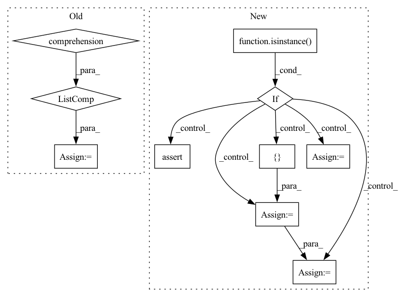

Pattern ID :34655
Before Change
local: bool = True):
if local:
// Process according to the model used
input_text = [f"q: {qa[0]} a: {qa[1]}" for qa in prev_qa]
input_text.append(f"q: {question}")
input_text.append(f"c: {context}")
input_text = " ".join(input_text)
return generate(input_text, model_name=model_name,After Change
model_name: str = None, tokenizer_name: str = None,
local: bool = True):
if local:
if isinstance( question, list) :
// Must have a consistent amount of examples
assert(len(question) == len(context))
if len(prev_qa) != 0:
assert (len(question) == len(prev_qa))
else:
prev_qa = [ prev_qa = [process_item(q, c, p)
for q, c, p in zip(question, context, prev_qa)]
else:
input_text = process_item(question, context, prev_qa)
return generate(input_text, model_name=model_name,
tokenizer_name=tokenizer_name, local=local)In pattern: SUPERPATTERN
Frequency: 3
Non-data size: 10
Instances Fragment ID: 99562319
Project Name: kiri-ai/kiri
Commit Name: 7f0b95ef8169196944a99724b719f73413b4f159
Time: 2020-12-28
Author: ojasaarkristo@gmail.com
File Name: kiri/models/qa.py
M Class Name: AnonimousClass
N Class Name: AnonimousClass
M Method Name: qa(6)
N Method Name: qa(6)
M Parent Class:
N Parent Class:
M File Name: kiri/models/qa.py
N File Name: kiri/models/qa.py
M Start Line: 10
M End Line: 13
N Start Line: 18
N End Line: 32
Before Change
return_dict=False,
)
down_block_res_samples = [
down_block_res_sample * controlnet_conditioning_scale
for down_block_res_sample in down_block_res_samples
]
mid_block_res_sample *= controlnet_conditioning_scale
// predict the noise residual
noise_pred = self.unet(After Change
image = prepare_image(image)
// condition image(s)
if isinstance( self.controlnet, ControlNetModel) :
controlnet_conditioning_image = prepare_controlnet_conditioning_image(
controlnet_conditioning_image=controlnet_conditioning_image,
width=width,
height=height,
batch_size=batch_size * num_images_per_prompt,
num_images_per_prompt=num_images_per_prompt,
device=device,
dtype=self.controlnet.dtype,
do_classifier_free_guidance=do_classifier_free_guidance,
)
elif isinstance(self.controlnet, MultiControlNetModel):
controlnet_conditioning_images = []
for image_ in controlnet_conditioning_image:
image_ = prepare_controlnet_conditioning_image(
controlnet_conditioning_image=image_,
width=width,
height=height,
batch_size=batch_size * num_images_per_prompt,
num_images_per_prompt=num_images_per_prompt,
device=device,
dtype=self.controlnet.dtype,
do_classifier_free_guidance=do_classifier_free_guidance,
)
controlnet_conditioning_images.append(image_)
controlnet_conditioning_image = controlnet_conditioning_images
else:
assert False
// 5. Prepare timesteps
self.scheduler.set_timesteps(num_inference_steps, device=device) Fragment ID: 99562329
Project Name: huggingface/diffusers
Commit Name: 1d033a95f62ccf2cdbb31795f69798ff1870241d
Time: 2023-03-30
Author: mikegarts@users.noreply.github.com
File Name: examples/community/stable_diffusion_controlnet_img2img.py
M Class Name: StableDiffusionControlNetImg2ImgPipeline
N Class Name: StableDiffusionControlNetImg2ImgPipeline
M Method Name: __call__(24)
N Method Name: __call__(24)
M Parent Class: DiffusionPipeline
N Parent Class: DiffusionPipeline
M File Name: examples/community/stable_diffusion_controlnet_img2img.py
N File Name: examples/community/stable_diffusion_controlnet_img2img.py
M Start Line: 662
M End Line: 872
N Start Line: 706
N End Line: 930
Before Change
return_dict=False,
)
down_block_res_samples = [
down_block_res_sample * controlnet_conditioning_scale
for down_block_res_sample in down_block_res_samples
]
mid_block_res_sample *= controlnet_conditioning_scale
// predict the noise residual
noise_pred = self.unet(After Change
mask_image = prepare_mask_image(mask_image)
// condition image(s)
if isinstance( self.controlnet, ControlNetModel) :
controlnet_conditioning_image = prepare_controlnet_conditioning_image(
controlnet_conditioning_image=controlnet_conditioning_image,
width=width,
height=height,
batch_size=batch_size * num_images_per_prompt,
num_images_per_prompt=num_images_per_prompt,
device=device,
dtype=self.controlnet.dtype,
do_classifier_free_guidance=do_classifier_free_guidance,
)
elif isinstance(self.controlnet, MultiControlNetModel):
controlnet_conditioning_images = []
for image_ in controlnet_conditioning_image:
image_ = prepare_controlnet_conditioning_image(
controlnet_conditioning_image=image_,
width=width,
height=height,
batch_size=batch_size * num_images_per_prompt,
num_images_per_prompt=num_images_per_prompt,
device=device,
dtype=self.controlnet.dtype,
do_classifier_free_guidance=do_classifier_free_guidance,
)
controlnet_conditioning_images.append(image_)
controlnet_conditioning_image = controlnet_conditioning_images
else:
assert False
masked_image = image * (mask_image < 0.5)
Fragment ID: 99562321
Project Name: huggingface/diffusers
Commit Name: 6290668254f421496c968e39d7de4e07e6bc394d
Time: 2023-04-28
Author: timegate@kaist.ac.kr
File Name: examples/community/stable_diffusion_controlnet_inpaint.py
M Class Name: StableDiffusionControlNetInpaintPipeline
N Class Name: StableDiffusionControlNetInpaintPipeline
M Method Name: __call__(22)
N Method Name: __call__(22)
M Parent Class: DiffusionPipeline
N Parent Class: DiffusionPipeline
M File Name: examples/community/stable_diffusion_controlnet_inpaint.py
N File Name: examples/community/stable_diffusion_controlnet_inpaint.py
M Start Line: 800
M End Line: 1017
N Start Line: 844
N End Line: 1079